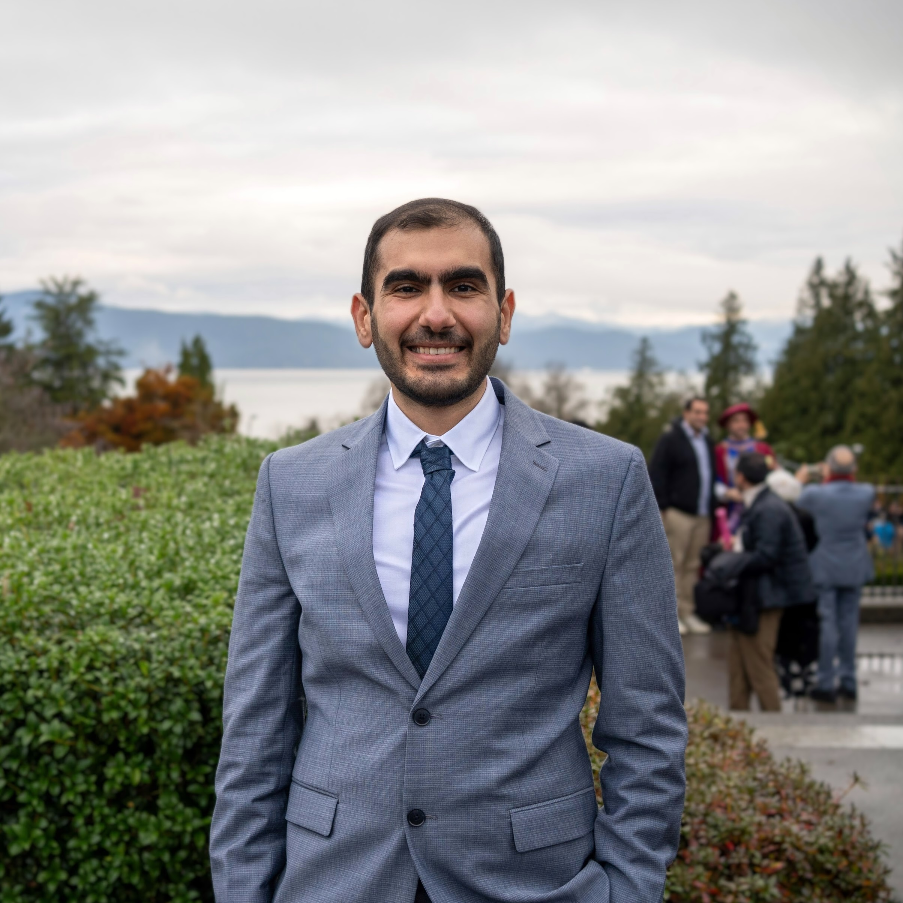

Education
- Ph.D. in Computer Science, University of British Columbia
- M.Sc. in Bioinformatics, University of British Columbia (Sep 2023 – Aug 2025)
- B.Sc. in Computer Engineering, Sharif University of Technology (Sep 2018 – Jun 2023)

University of British Columbia · Vancouver, Canada
PhD Student, Computer Science
I am interested in medical AI systems that are useful in real clinical workflows. My current work sits at the interface of 3D computer vision, medical image analysis, and computational biology.
I am a PhD student in Computer Science at UBC, working on robust and clinically-grounded AI methods for healthcare. My research background combines computer vision, deep learning, and bioinformatics, with ongoing collaborations in medical image analysis and translational health research. Alongside research, I enjoy mentoring students and supporting academic communities through teaching and reviewing.
Compact vision transformer experiments and utilities for practical model development.
Data pruning experiments for efficient training and reduced computational overhead.
A reusable training template for image classification research and rapid prototyping.
Foundation-model-inspired extensions and workflows for multiple-instance learning settings.
Sequence-based keypoint detection implementation and experimentation toolkit.
AI Driven 3D Assessment for Peyronie’s Disease
Ali Balapour, Eric Jumaga, Ryan Flannigan, Faraz Hach · The Journal of Sexual Medicine (2025) · DOI
PenoMeter: A Machine Learning and Algorithmic Tool to Advance Peyronie’s Disease Assessment
Reza Soltani*, Ali Balapour*, Luke Witherspoon, Abdulla Alhamam, Ryan Flannigan, Faraz Hach · The Journal of Sexual Medicine (2025) · DOI
Domain Adaptation and Generalization on Functional Medical Images: A Systematic Survey
Gita Sarafraz*, Armin Behnamnia*, Mehran Hosseinzadeh*, Ali Balapour*, Amin Meghrazi*, Hamid R. Rabiee · arXiv (2022) · arXiv